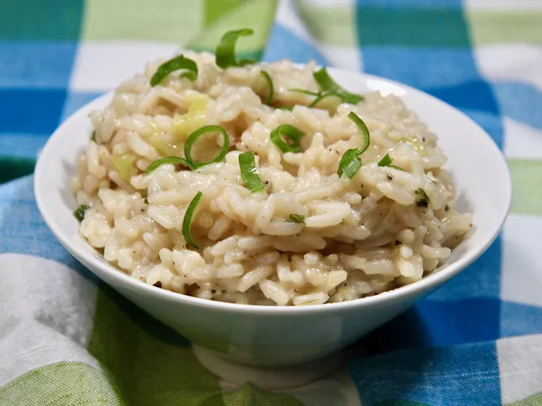

Risotto

Ingredients
- 2 tablespoons butter
- ⅔ cup sliced green onion
- 1 ⅓ cups uncooked long-grain rice
- 4 cups water
- 1 teaspoon chicken bouillon granules
- ¼ teaspoon ground black pepper
- ¾ cup grated Parmesan cheese
Steps
- Melt butter in a large skillet over medium-high heat.
Cook and stir green onion in hot butter briefly, then add rice.
- Cook and stir until rice is toasted, 2 to 3 minutes.
Pour in water; season with chicken bouillon and pepper.
- Bring to a boil, then reduce heat to medium-low.
Cover and simmer for 20 minutes.
- Remove from heat. Let stand, covered, for 5 minutes.
Stir in Parmesan cheese.